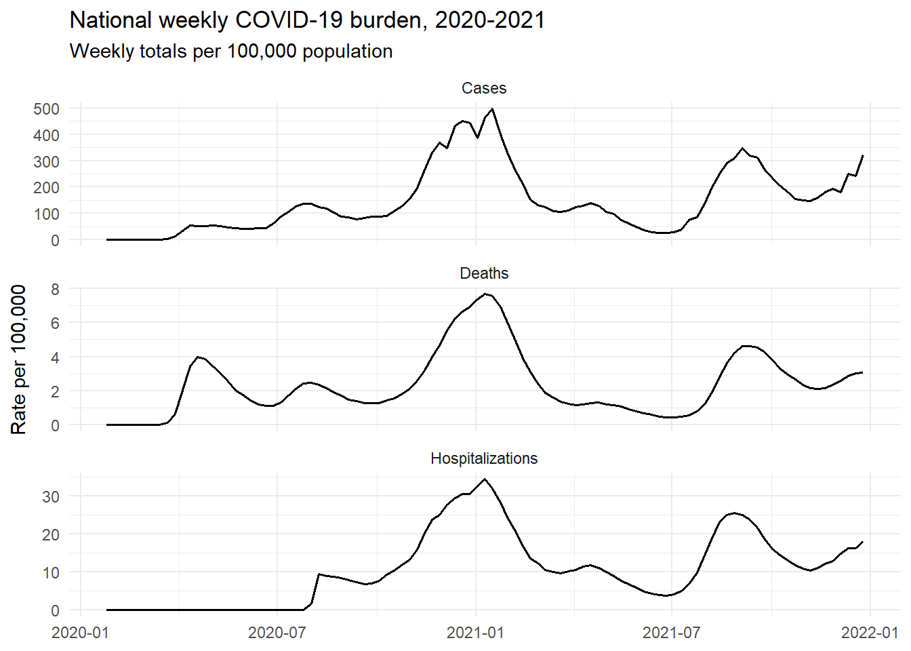
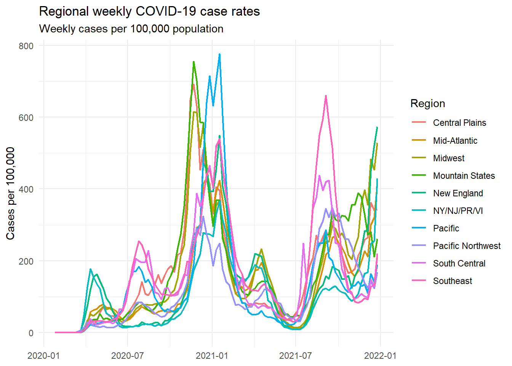
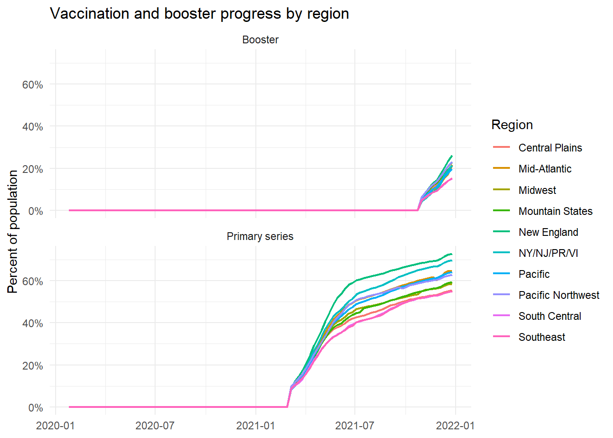
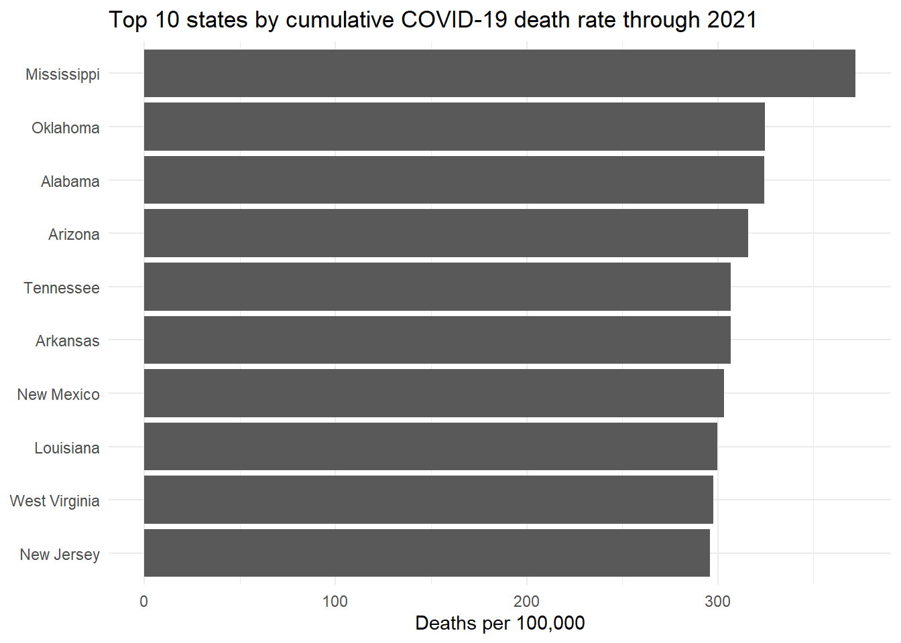
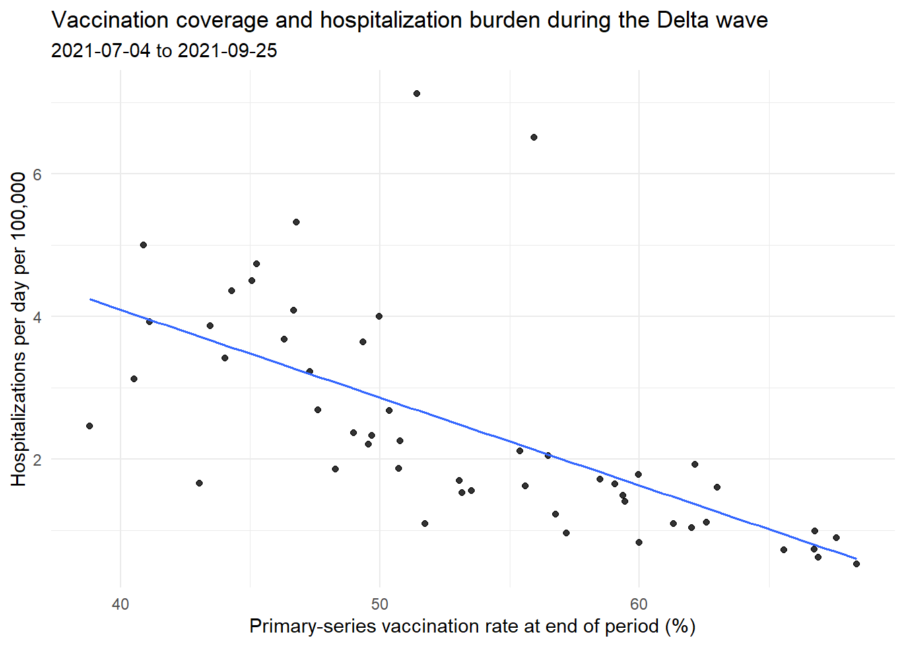
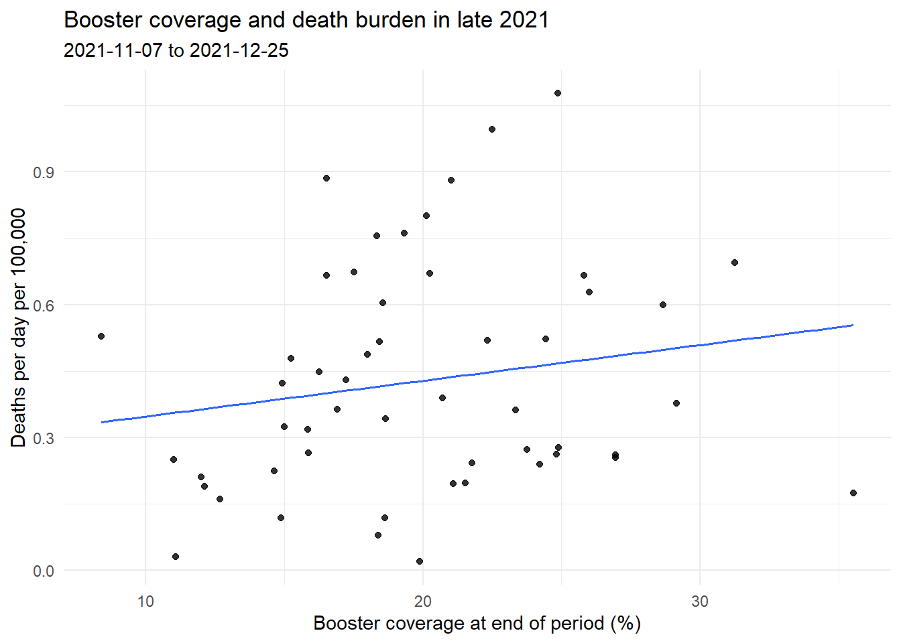

library(tidyverse)
library(httr2)
library(janitor)
library(jsonlite)
library(purrr)
library(lubridate)
library(knitr)
library(scales)
dir.create("data", showWarnings = FALSE)
dir.create("code", showWarnings = FALSE)
dir.create("figs", showWarnings = FALSE)
source("_census-key.R")Problem Set 4 Solution
Introduction
This document provides a complete solution to Problem Set 4 in a single .qmd file. In a project-style submission, I would split the code across code/funcs.R, code/wrangle.R, and code/analysis.qmd, save the final weekly dataset to data/dat.rds, and save the figures to figs/. For convenience, everything is included inline here.
Setup
Helper functions
# Parse dates that may arrive in multiple formats
parse_date_flex <- function(x) {
x <- as.character(x)
out <- suppressWarnings(as_date(ymd_hms(x, quiet = TRUE))) # keep only the date
needs_mdy <- is.na(out)
out[needs_mdy] <- suppressWarnings(as_date(mdy(x[needs_mdy], quiet = TRUE)))
needs_ymd <- is.na(out)
out[needs_ymd] <- suppressWarnings(as_date(ymd(x[needs_ymd], quiet = TRUE)))
out
}
# Pick the first matching column name from a list of candidates
pick_col <- function(dat, candidates) {
found <- intersect(candidates, names(dat))
if (length(found) == 0) {
stop(
"None of the candidate columns were found: ",
paste(candidates, collapse = ", ") #combine them into one string and sperated by ", ".
)
}
found[1] # pick the first column
}
pick_col_or_na <- function(dat, candidates) {
found <- intersect(candidates, names(dat))
if (length(found) == 0) NA_character_ else found[1] # if no mathc, return NA_character
}
# Downloader for CDC Socrata endpoints
get_cdc_data <- function(endpoint) {
request(endpoint) |>
req_url_query("$limit" = 10000000) |> # limit of returned rows
req_perform() |> # peform the request
resp_check_status() |> # 200 OK, 404: not found; 500: server error
resp_body_json(simplifyVector = TRUE) |> #reads the response body as JSON, and simply the parsd JSON into ordinary R objects when possible
as_tibble() |>
janitor::clean_names() #clean the column names into a standardized format (use underscore for /, -, etc)
}Part I: Download the data
1. Census population data
census_url <- "https://api.census.gov/data/2021/pep/population"
population_request <- request(census_url) |>
req_url_query( # addes query parameters
get = "POP_2020,POP_2021,NAME",
"for" = "state:*", # for=state:*: Census API syntax. state:*: very state code. "for" must be in quote for not interpreted as the reserved keyword `for`.
key = census_key
)
population_response <- population_request |>
req_perform() |>
resp_check_status()
resp_content_type(population_response) # check the content type of the response body, here, applicatoin/json[1] "application/json"population_raw <- population_response |>
resp_body_json(simplifyVector = TRUE) |>
as.data.frame(stringsAsFactors = FALSE) #keep char columns as char strings rather than factors. 2. Tidy the population data
population <- population_raw |>
row_to_names(1) |> # use the first row as the column names
as_tibble() |>
select(NAME, POP_2020, POP_2021) |>
rename(state_name = NAME) |>
pivot_longer( # wide->long
cols = starts_with("POP_"),
names_to = "year",
values_to = "population"
) |>
mutate(
year = readr::parse_number(year), # convert strings like "POP_2020" into the number 2020
population = readr::parse_number(population),
state = case_when(
state_name == "District of Columbia" ~ "DC",
state_name == "Puerto Rico" ~ "PR",
TRUE ~ state.abb[match(state_name, state.name)] # state.abb, state.name: R built-in vectors;
)
) |>
select(state_name, state, year, population)
population# A tibble: 104 × 4
state_name state year population
<chr> <chr> <dbl> <dbl>
1 Oklahoma OK 2020 3962031
2 Oklahoma OK 2021 3986639
3 Nebraska NE 2020 1961455
4 Nebraska NE 2021 1963692
5 Hawaii HI 2020 1451911
6 Hawaii HI 2021 1441553
7 South Dakota SD 2020 887099
8 South Dakota SD 2021 895376
9 Tennessee TN 2020 6920119
10 Tennessee TN 2021 6975218
# ℹ 94 more rows3. Regions data
regions_url <- "https://github.com/datasciencelabs/2025/raw/refs/heads/main/data/regions.json"
regions_json <- fromJSON(regions_url, simplifyVector = FALSE) # donot turn the JSON into a df or a vectors, keep it as a nested list structure.
regions <- map_dfr(regions_json, \(x) { # used to expand nested JSON. it applies a function to each element in the list regions_json, then row-binds all results into one df
# \(x): base R short hand for funciton(x)
tibble(
state_name = unlist(x$states), # unlist: turns a list into a plain char vector
region = as.integer(x$region[[1]]), #extract the first region and convert it into an integer
region_name = x$region_name
)
}) |>
mutate(
region_name = if_else(
region_name == "New York and New Jersey, Puerto Rico, Virgin Islands",
"NY/NJ/PR/VI",
region_name
)
)
regions# A tibble: 59 × 3
state_name region region_name
<chr> <int> <chr>
1 Connecticut 1 New England
2 Maine 1 New England
3 Massachusetts 1 New England
4 New Hampshire 1 New England
5 Rhode Island 1 New England
6 Vermont 1 New England
7 New Jersey 2 NY/NJ/PR/VI
8 New York 2 NY/NJ/PR/VI
9 Puerto Rico 2 NY/NJ/PR/VI
10 Virgin Islands 2 NY/NJ/PR/VI
# ℹ 49 more rows4. Join population and regions
population <- population |>
left_join(regions, by = "state_name")
population# A tibble: 104 × 6
state_name state year population region region_name
<chr> <chr> <dbl> <dbl> <int> <chr>
1 Oklahoma OK 2020 3962031 6 South Central
2 Oklahoma OK 2021 3986639 6 South Central
3 Nebraska NE 2020 1961455 7 Central Plains
4 Nebraska NE 2021 1963692 7 Central Plains
5 Hawaii HI 2020 1451911 9 Pacific
6 Hawaii HI 2021 1441553 9 Pacific
7 South Dakota SD 2020 887099 8 Mountain States
8 South Dakota SD 2021 895376 8 Mountain States
9 Tennessee TN 2020 6920119 4 Southeast
10 Tennessee TN 2021 6975218 4 Southeast
# ℹ 94 more rows5. Download the CDC datasets
cases_raw <- get_cdc_data("https://data.cdc.gov/resource/pwn4-m3yp.json")
hosp_raw <- get_cdc_data("https://data.cdc.gov/resource/39z2-9zu6.json")
deaths_raw <- get_cdc_data("https://data.cdc.gov/resource/r8kw-7aab.json")
vax_raw <- get_cdc_data("https://data.cdc.gov/resource/rh2h-3yt2.json")
map( #apply the funciton dim to each elm of the list
list(
cases = cases_raw,
hospitalizations = hosp_raw,
deaths = deaths_raw,
vaccinations = vax_raw
),
dim #return number of rows, number of cols
)$cases
[1] 10380 10
$hospitalizations
[1] 90434 15
$deaths
[1] 22248 17
$vaccinations
[1] 88560 29Part II: Wrangle the weekly state-level dataset
6. Compare the raw schemas
raw_summary <- tibble( # create a summary table describing the four raw datasets
outcome = c("cases", "hospitalizations", "deaths", "vaccinations"),
jurisdiction_column = c(
pick_col_or_na(cases_raw, c("state", "jurisdiction", "location")),
pick_col_or_na(hosp_raw, c("jurisdiction", "state", "location")),
pick_col_or_na(deaths_raw, c("state", "jurisdiction")),
pick_col_or_na(vax_raw, c("location", "state", "jurisdiction"))
),
frequency = c("weekly", "daily", "weekly", "daily"), #reporting frequency of each dataset
time_columns = c(
paste(intersect(c("start_date", "end_date", "submission_date", "date", "date_updated"), names(cases_raw)), collapse = ", "),
paste(intersect(c("collection_date", "date"), names(hosp_raw)), collapse = ", "),
paste(intersect(c("start_date", "end_date", "week_ending_date", "date", "mmwr_week", "year"), names(deaths_raw)), collapse = ", "),
paste(intersect(c("date", "mmwr_week", "mmwr_year", "date_type"), names(vax_raw)), collapse = ", ")
)
)
kable(raw_summary)| outcome | jurisdiction_column | frequency | time_columns |
|---|---|---|---|
| cases | state | weekly | start_date, end_date, date_updated |
| hospitalizations | jurisdiction | daily | collection_date |
| deaths | state | weekly | start_date, end_date, week_ending_date, mmwr_week, year |
| vaccinations | location | daily | date, mmwr_week, date_type |
7. Wrangle the cases data
case_state_col <- pick_col(cases_raw, c("state", "jurisdiction", "location")) # find s which column identifies the state, and returns the first one that exists
case_date_col <- pick_col(cases_raw, c("end_date", "submission_date", "week_ending_date", "date"))
case_n_col <- pick_col(cases_raw, c("new_cases", "new_case", "cases"))
cases <- cases_raw |>
transmute( # creates a new data frame with only these three cols
state = .data[[case_state_col]], # .data[[...]]: because the col name is stored in a variable named case_state_col; .data: current df; .data$case_state_col: Look for a col named "case_state_col".
date = parse_date_flex(.data[[case_date_col]]),
cases = readr::parse_number(as.character(.data[[case_n_col]])) #extracts the numeric count
) |>
semi_join(population |> distinct(state), by = "state") |> # population\>distinct(state) is the right table; distinct(state): take the state column and keep each sxtate only once.
filter(!is.na(date)) |>
mutate(
mmwr_year = epiyear(date), # create epideminological year and week variables (not always the same as ordinatry canlendar year and week. THis is common for CDC-style weekly disease data)
mmwr_week = epiweek(date)
) |>
group_by(state, mmwr_year, mmwr_week) |>
summarise( #within each group, summarize
date = max(date, na.rm = TRUE),
cases = sum(cases, na.rm = TRUE),
.groups = "drop"
)
cases# A tibble: 8,996 × 5
state mmwr_year mmwr_week date cases
<chr> <dbl> <dbl> <date> <dbl>
1 AK 2020 4 2020-01-22 0
2 AK 2020 5 2020-01-29 0
3 AK 2020 6 2020-02-05 0
4 AK 2020 7 2020-02-12 0
5 AK 2020 8 2020-02-19 0
6 AK 2020 9 2020-02-26 0
7 AK 2020 10 2020-03-04 0
8 AK 2020 11 2020-03-11 0
9 AK 2020 12 2020-03-18 11
10 AK 2020 13 2020-03-25 52
# ℹ 8,986 more rows8. Wrangle the hospitalization data
hosp_state_col <- pick_col(hosp_raw, c("jurisdiction", "state", "location"))
hosp_date_col <- pick_col(hosp_raw, c("collection_date", "date"))
hosp_n_col <- pick_col(hosp_raw, c("new_covid_19_hospital", "new_hospital_admissions_covid"))
hosp <- hosp_raw |>
transmute(
state = .data[[hosp_state_col]],
date = parse_date_flex(.data[[hosp_date_col]]),
hosp = readr::parse_number(as.character(.data[[hosp_n_col]]))
) |>
semi_join(population |> distinct(state), by = "state") |>
filter(!is.na(date)) |>
mutate(
mmwr_year = epiyear(date),
mmwr_week = epiweek(date)
) |>
group_by(state, mmwr_year, mmwr_week) |>
summarise(
date = max(date, na.rm = TRUE),
hosp = sum(hosp, na.rm = TRUE),
n_days = n_distinct(date), #count distinct number of dates
.groups = "drop"
) |>
# filter(n_days == 7) |> #keep only weeks with all 7 days present: leading to an empty set
filter(n_days >=1) |> #keep only weeks with all 7 days present
select(-n_days) # drop the col n_days
hosp# A tibble: 10,192 × 5
state mmwr_year mmwr_week date hosp
<chr> <dbl> <dbl> <date> <dbl>
1 AK 2020 31 2020-08-01 5
2 AK 2020 32 2020-08-08 28
3 AK 2020 33 2020-08-15 22
4 AK 2020 34 2020-08-22 31
5 AK 2020 35 2020-08-29 31
6 AK 2020 36 2020-09-05 35
7 AK 2020 37 2020-09-12 30
8 AK 2020 38 2020-09-19 38
9 AK 2020 39 2020-09-26 35
10 AK 2020 40 2020-10-03 33
# ℹ 10,182 more rows9. Wrangle the deaths data
death_state_col <- pick_col(deaths_raw, c("state", "jurisdiction"))
death_date_col <- pick_col(deaths_raw, c("week_ending_date", "end_date", "date"))
death_n_col <- pick_col(deaths_raw, c("covid_19_deaths", "covid_deaths"))
deaths <- deaths_raw |>
(\(x) { # inline-anonymous function
if ("group" %in% names(x)) filter(x, group == "By Week") else x
})() |> # (\(x){...}()): immediately call the function on the current dataframe
transmute(
state_value = .data[[death_state_col]],
date = parse_date_flex(.data[[death_date_col]]),
deaths = readr::parse_number(as.character(.data[[death_n_col]]))
) |>
left_join(
population |>
distinct(state, state_name), # unique pairs of (state, state_name)
by = c("state_value" = "state_name") # state_value in the curretn data, state_name in the populaiton table
) |>
mutate(state = coalesce(state, state_value)) |> #coalesce(a,b): use a if it is not missing; otherwise use b
select(state, date, deaths) |>
semi_join(population |> distinct(state), by = "state") |>
filter(!is.na(date)) |>
mutate(
mmwr_year = epiyear(date),
mmwr_week = epiweek(date)
) |>
group_by(state, mmwr_year, mmwr_week) |>
summarise(
date = max(date, na.rm = TRUE),
deaths = sum(deaths, na.rm = TRUE),
.groups = "drop"
)
deaths# A tibble: 17,056 × 5
state mmwr_year mmwr_week date deaths
<chr> <dbl> <dbl> <date> <dbl>
1 AK 2020 1 2020-01-04 0
2 AK 2020 2 2020-01-11 0
3 AK 2020 3 2020-01-18 0
4 AK 2020 4 2020-01-25 0
5 AK 2020 5 2020-02-01 0
6 AK 2020 6 2020-02-08 0
7 AK 2020 7 2020-02-15 0
8 AK 2020 8 2020-02-22 0
9 AK 2020 9 2020-02-29 0
10 AK 2020 10 2020-03-07 0
# ℹ 17,046 more rows10. Wrangle the vaccination data
vax_state_col <- pick_col(vax_raw, c("location", "state", "jurisdiction"))
vax_date_col <- pick_col(vax_raw, c("date"))
vax_series_col <- pick_col(vax_raw, c("series_complete_cumulative", "series_complete_yes", "series_complete")) #completed series count
vax_boost_col <- pick_col(vax_raw, c("booster_cumulative", "booster_doses", "additional_doses")) # completed booster counts
vax <- vax_raw |>
(\(x) {
if ("date_type" %in% names(x)) filter(x, is.na(date_type) | date_type == "Report") else x
})() |>
transmute(
state = .data[[vax_state_col]],
date = parse_date_flex(.data[[vax_date_col]]),
vax = readr::parse_number(as.character(.data[[vax_series_col]])),
booster = readr::parse_number(as.character(.data[[vax_boost_col]]))
) |>
semi_join(population |> distinct(state), by = "state") |>
filter(!is.na(date)) |>
mutate(
mmwr_year = epiyear(date),
mmwr_week = epiweek(date)
) |>
arrange(state, date) |> # sort in chornological order within each state
group_by(state, mmwr_year, mmwr_week) |>
slice_max(date, n = 1, with_ties = FALSE) |> # for each state-week grpu, keep the row with the largest date. n: keep the n rows with the largest value. similarly, slice_head(), slice_tail()
ungroup()
vax# A tibble: 6,552 × 6
state date vax booster mmwr_year mmwr_week
<chr> <date> <dbl> <dbl> <dbl> <dbl>
1 AK 2020-12-19 0 0 2020 51
2 AK 2020-12-26 0 0 2020 52
3 AK 2021-01-02 0 0 2020 53
4 AK 2021-01-09 0 0 2021 1
5 AK 2021-01-16 0 0 2021 2
6 AK 2021-01-23 0 0 2021 3
7 AK 2021-01-30 0 0 2021 4
8 AK 2021-02-06 0 0 2021 5
9 AK 2021-02-13 0 0 2021 6
10 AK 2021-02-20 0 0 2021 7
# ℹ 6,542 more rows11. Create the full state-week panel
all_dates <- tibble(
date = seq(make_date(2020, 1, 25), make_date(2021, 12, 31), by = "week") # create a sequence of dates, one week apart
) |>
mutate(
date = ceiling_date(date, unit = "week", week_start = 7) - days(1), # adjust each date to Saturday of each week. ceiling_date(): moves each date up to the start of the next week, where weeks start on Sunday. subtract 1 day, moves back one day landing on Saturday
mmwr_year = epiyear(date),
mmwr_week = epiweek(date)
)
dates_and_pop <- expand_grid( # create all combinations of every week in all_dates adn every state in population
all_dates,
state = unique(population$state)
) |>
left_join(population, by = c("state", "mmwr_year" = "year"))
dat <- dates_and_pop |>
left_join(select(cases, -date), by = c("state", "mmwr_year", "mmwr_week")) |>
left_join(select(hosp, -date), by = c("state", "mmwr_year", "mmwr_week")) |>
left_join(select(deaths, -date), by = c("state", "mmwr_year", "mmwr_week")) |>
left_join(select(vax, -date), by = c("state", "mmwr_year", "mmwr_week")) |>
group_by(state) |>
arrange(date, .by_group = TRUE) |> #sort within each state
fill(vax, booster, .direction = "down") |> # carry the last observed non-missing value downward to later missing rows for both vax and booster data
ungroup() |>
mutate(
cases = replace_na(cases, 0), # replacing missing values with 0
hosp = replace_na(hosp, 0),
deaths = replace_na(deaths, 0),
vax = replace_na(vax, 0),
booster = replace_na(booster, 0)
) |>
arrange(state, date)
saveRDS(dat, "data/dat.rds") # save dat as an RDS file. readback : readRDS("path-to-file")
dat# A tibble: 5,252 × 13
date mmwr_year mmwr_week state state_name population region region_name
<date> <dbl> <dbl> <chr> <chr> <dbl> <int> <chr>
1 2020-01-25 2020 4 AK Alaska 732441 10 Pacific No…
2 2020-02-01 2020 5 AK Alaska 732441 10 Pacific No…
3 2020-02-08 2020 6 AK Alaska 732441 10 Pacific No…
4 2020-02-15 2020 7 AK Alaska 732441 10 Pacific No…
5 2020-02-22 2020 8 AK Alaska 732441 10 Pacific No…
6 2020-02-29 2020 9 AK Alaska 732441 10 Pacific No…
7 2020-03-07 2020 10 AK Alaska 732441 10 Pacific No…
8 2020-03-14 2020 11 AK Alaska 732441 10 Pacific No…
9 2020-03-21 2020 12 AK Alaska 732441 10 Pacific No…
10 2020-03-28 2020 13 AK Alaska 732441 10 Pacific No…
# ℹ 5,242 more rows
# ℹ 5 more variables: cases <dbl>, hosp <dbl>, deaths <dbl>, vax <dbl>,
# booster <dbl>Part III: Analysis figures
Figure 1: National weekly burden
This figure shows national weekly cases, hospitalizations, and deaths per 100,000 population. The three outcomes are displayed in separate panels so their trends can be compared without forcing a common y-axis scale.
fig1_dat <- dat |>
group_by(date) |>
summarise(
cases_rate = sum(cases, na.rm = TRUE) / sum(population, na.rm = TRUE) * 100000,
hosp_rate = sum(hosp, na.rm = TRUE) / sum(population, na.rm = TRUE) * 100000,
deaths_rate = sum(deaths, na.rm = TRUE) / sum(population, na.rm = TRUE) * 100000,
.groups = "drop"
) |>
pivot_longer(
cols = ends_with("_rate"),
names_to = "outcome",
values_to = "rate_per_100k"
) |>
mutate(
outcome = recode(
outcome,
cases_rate = "Cases",
hosp_rate = "Hospitalizations",
deaths_rate = "Deaths"
)
)
p1 <- ggplot(fig1_dat, aes(date, rate_per_100k)) +
geom_line(linewidth = 0.7) +
facet_wrap(~ outcome, ncol = 1, scales = "free_y") +
labs(
title = "National weekly COVID-19 burden, 2020-2021",
subtitle = "Weekly totals per 100,000 population",
x = NULL,
y = "Rate per 100,000"
) +
theme_minimal()
p1
ggsave("figs/figure1.png", p1, width = 8, height = 9, dpi = 300)Figure 2: Regional case rates over time
This plot compares weekly case rates per 100,000 across Public Health Service regions. The regional lines make it easier to see whether large national waves happened at the same time and magnitude everywhere.
fig2_dat <- dat |>
group_by(date, region_name) |>
summarise(
case_rate = sum(cases, na.rm = TRUE) / sum(population, na.rm = TRUE) * 100000,
.groups = "drop"
)
p2 <- ggplot(fig2_dat, aes(date, case_rate, color = region_name)) +
geom_line(linewidth = 0.8) +
labs(
title = "Regional weekly COVID-19 case rates",
subtitle = "Weekly cases per 100,000 population",
x = NULL,
y = "Cases per 100,000",
color = "Region"
) +
theme_minimal()
p2
ggsave("figs/figure2.png", p2, width = 9, height = 5, dpi = 300)Figure 3: Vaccination and booster progress by region
This figure tracks primary-series vaccination and booster uptake over time by region. The percentages are population-weighted regional averages based on the cumulative state totals in the weekly panel.
fig3_dat <- dat |>
group_by(date, region_name) |>
summarise(
vax_pct = sum(vax, na.rm = TRUE) / sum(population, na.rm = TRUE) * 100,
booster_pct = sum(booster, na.rm = TRUE) / sum(population, na.rm = TRUE) * 100,
.groups = "drop"
) |>
pivot_longer(
cols = c(vax_pct, booster_pct),
names_to = "series",
values_to = "percent"
) |>
mutate(
series = recode(
series,
vax_pct = "Primary series",
booster_pct = "Booster"
)
)
p3 <- ggplot(fig3_dat, aes(date, percent, color = region_name)) +
geom_line(linewidth = 0.8) +
facet_wrap(~ series, ncol = 1) +
labs(
title = "Vaccination and booster progress by region",
x = NULL,
y = "Percent of population",
color = "Region"
) +
scale_y_continuous(labels = label_number(suffix = "%")) +
theme_minimal()
p3
ggsave("figs/figure3.png", p3, width = 9, height = 8, dpi = 300)Figure 4: Top 10 states by cumulative death rate
To answer this question, I sum weekly deaths for each state over 2020 and 2021 and divide by the 2021 population estimate. The resulting bar plot shows the 10 jurisdictions with the highest cumulative death burden by the end of 2021.
fig4_dat <- dat |>
group_by(state, state_name) |>
summarise(
total_deaths = sum(deaths, na.rm = TRUE),
population_2021 = max(population, na.rm = TRUE),
.groups = "drop"
) |>
mutate(death_rate = total_deaths / population_2021 * 100000) |>
slice_max(death_rate, n = 10) |>
arrange(death_rate) |>
mutate(state_name = fct_reorder(state_name, death_rate))
p4 <- ggplot(fig4_dat, aes(death_rate, state_name)) +
geom_col() +
labs(
title = "Top 10 states by cumulative COVID-19 death rate through 2021",
x = "Deaths per 100,000",
y = NULL
) +
theme_minimal()
p4
ggsave("figs/figure4.png", p4, width = 8, height = 5, dpi = 300)Figure 5: Vaccination and hospitalization during a major wave
I use the Delta-wave period from July 4, 2021 to September 25, 2021. This window captures a major national hospitalization surge in 2021 and occurs after primary-series vaccination had become meaningful in much of the country.
wave5_start <- as_date("2021-07-04")
wave5_end <- as_date("2021-09-25")
wave5_days <- as.numeric(wave5_end - wave5_start) + 1
fig5_hosp <- dat |>
filter(date >= wave5_start, date <= wave5_end) |>
group_by(state, state_name) |>
summarise(
hosp = sum(hosp, na.rm = TRUE),
population = max(population, na.rm = TRUE),
.groups = "drop"
)
fig5_vax <- dat |>
filter(date == wave5_end) |>
select(state, vax)
fig5_dat <- fig5_hosp |>
left_join(fig5_vax, by = "state") |>
mutate(
hosp_per_day_per_100k = hosp / wave5_days / population * 100000,
vax_rate = vax / population * 100
)
p5 <- ggplot(fig5_dat, aes(vax_rate, hosp_per_day_per_100k)) +
geom_point(alpha = 0.8) +
geom_smooth(method = "lm", se = FALSE, linewidth = 0.7) +
labs(
title = "Vaccination coverage and hospitalization burden during the Delta wave",
subtitle = paste(wave5_start, "to", wave5_end),
x = "Primary-series vaccination rate at end of period (%)",
y = "Hospitalizations per day per 100,000"
) +
theme_minimal()
p5`geom_smooth()` using formula = 'y ~ x'
ggsave("figs/figure5.png", p5, width = 8, height = 5, dpi = 300)`geom_smooth()` using formula = 'y ~ x'Figure 6: Booster coverage and death rates
For booster coverage, I use a late-2021 window from November 7, 2021 to December 25, 2021. By then booster uptake was no longer trivial, so it is reasonable to compare end-of-period booster coverage with death rates during that wave.
wave6_start <- as_date("2021-11-07")
wave6_end <- as_date("2021-12-25")
wave6_days <- as.numeric(wave6_end - wave6_start) + 1
fig6_deaths <- dat |>
filter(date >= wave6_start, date <= wave6_end) |>
group_by(state, state_name) |>
summarise(
deaths = sum(deaths, na.rm = TRUE),
population = max(population, na.rm = TRUE),
.groups = "drop"
)
fig6_booster <- dat |>
filter(date == wave6_end) |>
select(state, booster)
fig6_dat <- fig6_deaths |>
left_join(fig6_booster, by = "state") |>
mutate(
deaths_per_day_per_100k = deaths / wave6_days / population * 100000,
booster_rate = booster / population * 100
)
p6 <- ggplot(fig6_dat, aes(booster_rate, deaths_per_day_per_100k)) +
geom_point(alpha = 0.8) +
geom_smooth(method = "lm", se = FALSE, linewidth = 0.7) +
labs(
title = "Booster coverage and death burden in late 2021",
subtitle = paste(wave6_start, "to", wave6_end),
x = "Booster coverage at end of period (%)",
y = "Deaths per day per 100,000"
) +
theme_minimal()
p6`geom_smooth()` using formula = 'y ~ x'
ggsave("figs/figure6.png", p6, width = 8, height = 5, dpi = 300)`geom_smooth()` using formula = 'y ~ x'Final check
The final dataset has the requested variables, the weekly panel is saved to data/dat.rds, and the six figures are saved as PNG files in figs/.
colnames(dat) [1] "date" "mmwr_year" "mmwr_week" "state" "state_name"
[6] "population" "region" "region_name" "cases" "hosp"
[11] "deaths" "vax" "booster" list.files("figs")[1] "figure1.png" "figure2.png" "figure3.png" "figure4.png" "figure5.png"
[6] "figure6.png"